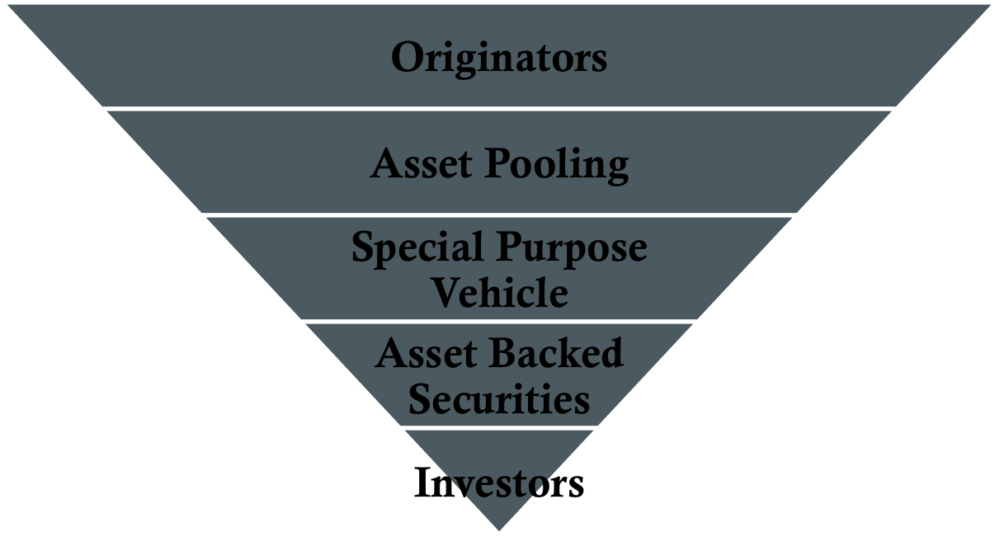

Securitization
Definition: A process through which financial institutions pool similar assets in a portfolio and sell the portfolio to investors

Main Players in the RMBS Market
- Ginnie Mae
- Fannie Mae
- Freddie Mac
- Private Labels
Mortgages and the Prepayment Option
- Coupon payments comprise both interest and principal
- Mortgages often refinance in low interest rate environments
- Prepayment factors:
- Seasonality
- Age of mortgage pool
- Family circumstances
- Housing prices
- Burnout effect
Valuing Mortgage Backed Securities
- Weighted average maturity (WAM)
- Weighted average coupon (WAC)
- Prepayment speed
- Constant maturity mortality
- PSA experience
Pass-Through Securities
Definition: A simple MBS representing a claim to a fraction of the total cash flow from the pool
- Declining interest rates encourage refinancing activity and increases the conditional prepayment rate, thus:
- Effective duration is lower than would otherwise be expected
- Effective convexity is negative
Collateralized Mortgage Obligations
Definition: Securities with structures that are more complex than pass-through securities
- Offers different levels of exposure to prepayment risk
- Common structures:
- CMO sequential structure
- CMO planned amortization class (PAC)
- Interest only (IO) and principal only (PO) stripes